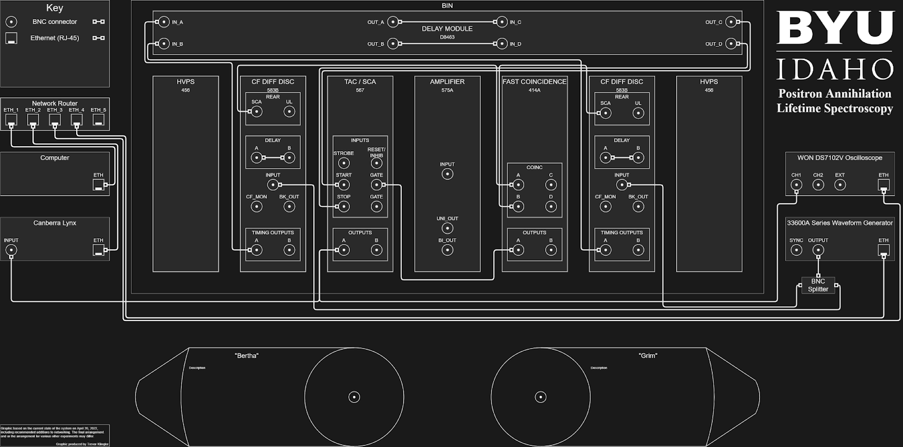
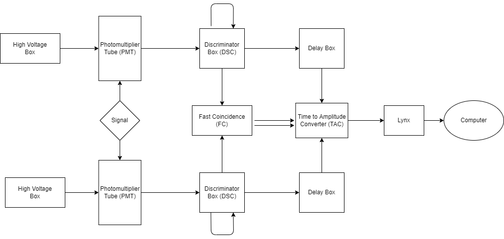

About Positron Annihilation Lifetime Spectroscopy
Theory behind PALS


What is Positron Anihilation Spectroscopy Lifetime? A positron is created through either a β + nuclear decay event or through pair pro-duction. In the event of creation through pair-production, the positron may have significant forward momentum remaining as a result of the process of its creation.This is unlike positrons created through nuclear decay, which typically have little mo-mentum, as is the case for Na22.
After undergoing the processes of thermalization, diffusion, and trapping, the positron is in a state of very low kinetic energy and in close proximity to its anti-particle, the electron. Positron annihilation is a quantum electrodynamic process in which a positron and electron annihilate, that is, convert their mass entirely into energy.
Detection System
 The detection system is made of several devices, and all them together have the objective of detecting the lifetime of positrons.
The devices for the dection system are two photo multimeter tubes with their respective scintillator, two discriminator boxes, two delay boxes, one fast coincidence box, one amplitude to time converter, one data adquisition equipment (Lynx).